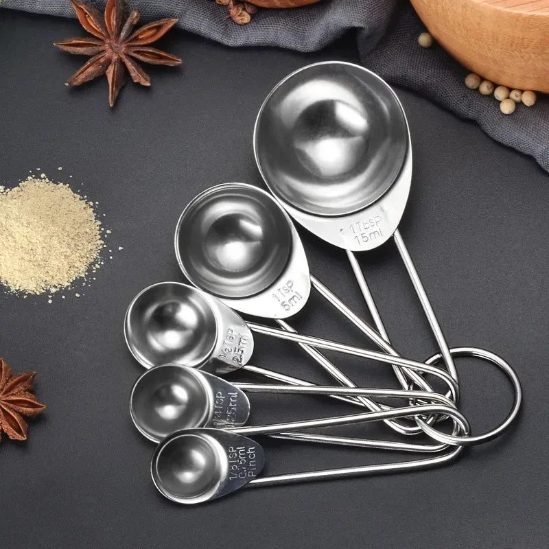
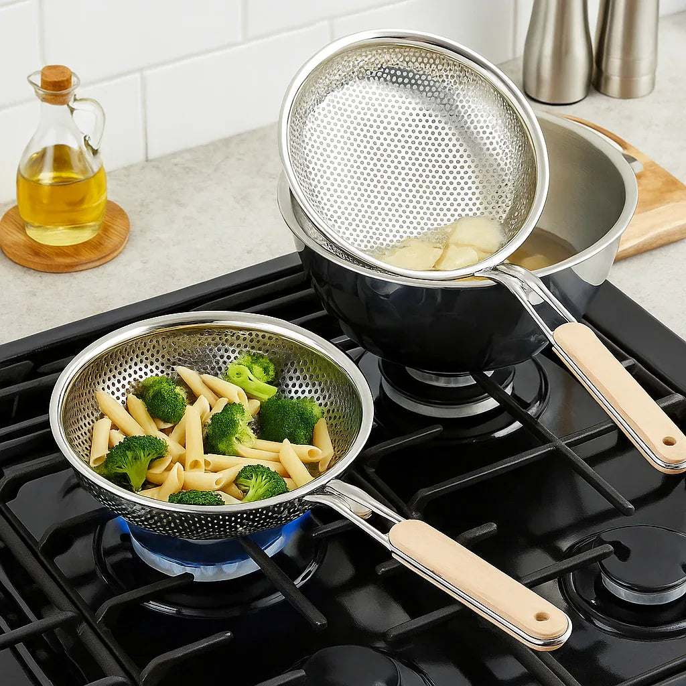

Coffee culture has grown quickly in Pakistan. Cafes have opened across Lahore, Karachi and Islamabad, and a cappuccino or latte has become a favourite treat for students and young professionals. But a single cup can now cost as much as a whole meal, and that adds up quickly. Many people have started making cafe-style coffee at home, and the good news is that it is easy with a few simple tools.
This guide explains how to make frothy coffee at home without an expensive espresso machine, from the classic Pakistani beaten coffee to milk-frothed lattes.
The classic Pakistani beaten coffee
Long before coffee shops, Pakistani households made phenti hui coffee, beaten coffee. Instant coffee, sugar and a few drops of water are whisked together until they turn pale, thick and creamy, then topped with hot milk. Traditionally this is beaten by hand with a spoon for ten minutes, which is tiring. A handheld coffee beater or frother does the same job in a minute or two, producing a smooth, glossy foam. It is the base for a sweet, frothy cup that many people prefer to anything from a cafe.
How to make beaten coffee
- Add two teaspoons of instant coffee and two teaspoons of sugar to a mug
- Add one to two teaspoons of hot water
- Beat with a frother until thick, pale and creamy, about one to two minutes
- Pour in hot milk slowly, stirring gently
- Sprinkle a little cocoa powder or cinnamon on top

Adjust sugar and coffee to taste. The same whipped mixture spooned over cold milk with ice becomes the popular dalgona coffee.
Frothing milk for lattes and cappuccinos
A handheld frother also froths milk. Heat milk until hot but not boiling, pour it into a tall jug or mug, and froth with the wand just below the surface until it doubles in volume. Full-cream milk produces the richest foam. Pour the milk over strong coffee, holding back the foam with a spoon, then spoon the foam on top. You can find frothers and other small tools among coffee beaters, frothers and measuring spoons that suit home use.
Choosing your coffee
Instant coffee is the easiest and most widely available in Pakistan. For better flavour, try ground coffee brewed in a French press or a simple pour-over filter. Local roasters have appeared in big cities, offering fresh beans. Store coffee in an airtight jar away from heat and light; humidity ruins coffee quickly.
Measuring for consistency
Cafe drinks taste consistent because baristas measure everything. Using a set of measuring spoons at home helps you repeat a perfect cup. Note the amounts of coffee, sugar and milk you like best, and stick to them. Small changes make a big difference in taste.

Flavour ideas
Once you have the basics, experiment. Add a pinch of cardamom for a desi twist, cinnamon for warmth, or a little vanilla essence. In winter, a spoon of chocolate syrup makes a mocha. In summer, pour frothy coffee over ice with a scoop of vanilla ice cream for a quick affogato-style treat.
Caring for your frother
Rinse the whisk under running water immediately after use, or run it briefly in a glass of warm soapy water and then clean water. Dry it before storing. Remove batteries if you will not use it for a long time to prevent corrosion. A small strainer is also handy for removing milk skin and lumps.
The savings add up
If you buy a cafe coffee three times a week, the monthly cost can easily exceed what a simple frother, a jar of coffee and a month of milk cost together. Making coffee at home does not mean giving up cafes entirely, but it turns them into an occasional treat rather than a daily expense.
Final thoughts
Cafe-style coffee at home is easy, affordable and fun. Start with the classic Pakistani beaten coffee, learn to froth milk, measure your ingredients and experiment with flavours. With a simple frother, your kitchen becomes your favourite cafe.